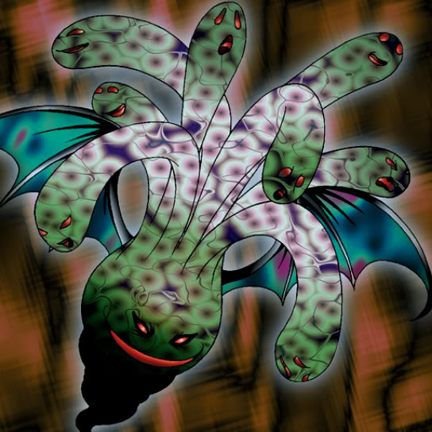

Phantom Ghost

STATS
ATK: 600
DEF: 800DECK COST
Deck Cost per Card: 14Fusion List (27 Possible Fusions)
- Phantom Ghost + Abyss Flower = Wood Remains
- Phantom Ghost + Akakieisu = Magical Ghost
- Phantom Ghost + Ancient Jar = Stone Ghost
- Phantom Ghost + Fairywitch = Magical Ghost
- Phantom Ghost + Arlownay = Wood Remains
- Phantom Ghost + Armed Ninja = Zombie Warrior
- Phantom Ghost + Blackland Fire Dragon = Dragon Zombie
- Phantom Ghost + Crawling Dragon #2 = Skelgon
- Phantom Ghost + Crawling Dragon = Skelgon
- Phantom Ghost + Dragon Zombie = Skelgon
- Phantom Ghost + Griggle = Wood Remains
- Phantom Ghost + Kagemusha of the Blue Flame = Zombie Warrior
- Phantom Ghost + M-Warrior #1 = Zombie Warrior
- Phantom Ghost + M-Warrior #2 = Zombie Warrior
- Phantom Ghost + Mushroom Man = Wood Remains
- Phantom Ghost + Mystic Lamp = Magical Ghost
- Phantom Ghost + One-Eyed Shield Dragon = Dragon Zombie
- Phantom Ghost + Oscillo Hero = Armored Zombie
- Phantom Ghost + Petit Dragon = Dragon Zombie
- Phantom Ghost + Queen's Double = Zombie Warrior
- Phantom Ghost + Rainbow Flower = Wood Remains
- Phantom Ghost + Sectarian of Secrets = Magical Ghost
- Phantom Ghost + Skelgon = Curse of Dragon
- Phantom Ghost + Swordsman from a Foreign Land = Zombie Warrior
- Phantom Ghost + The Bewitching Phantom Thief = Magical Ghost
- Phantom Ghost + Vishwar Randi = Zombie Warrior
- Phantom Ghost + Wicked Dragon with the Ersatz Head = Dragon Zombie